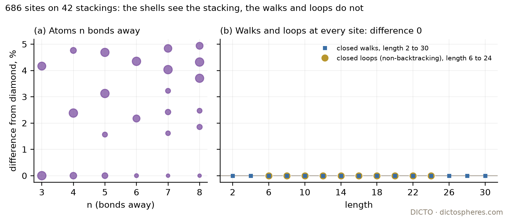
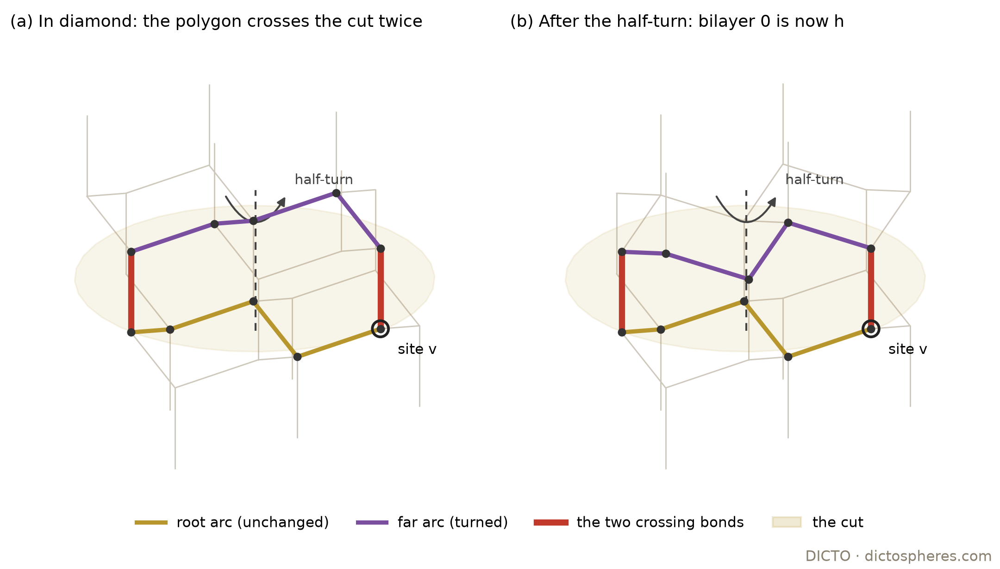
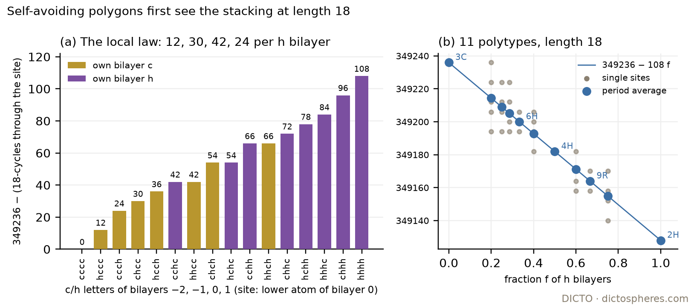

Version 6 (15 November 2026) adds the proof of the differences between stackings in Theorem 5: the half-turn twist of one side of a bilayer, which matches the polygons crossing every bilayer at most twice one to one in every stacking (Theorem A and Corollary A, all lengths, with Lemmas 5 and 6), the exact local formula for flipping one bilayer (Theorem B), the vanishing of the six-crossing terms (Lemma 7), the finite tables that give the coefficients, the reason the first difference is at length 18, and Figure 4. The constants of Theorem 5 remain diamond's counts by Guttmann and Jensen; the direct enumeration is kept as a check. It also compares the polygons with Herrero's self-avoiding walks on ice, which differ by length 15 (polygon counts first differ at 18), and cites Conway and Sloane (1997) on coordination sequences and Xu, Lin and Zhang on the open question of Sh and Sc, which these results do not decide. No earlier statement changes.
Version 5 (15 November 2026) adds Section 5, where the stacking first shows: ring statistics are blind to stacking (Theorem 4), self-avoiding polygons through a site first differ at length 18 by an exact local law (Theorem 5, Corollary 6), and, in Nagle's ice series, the first difference is at 16 bonds; it also adds the formal verification of Theorem 1 and its explicit count in Lean 4 with Mathlib (Section 3), Figure 3, and the OEIS number A400949 for the loop counts. Theorem 1 and its proof are unchanged.
Version 4 follows the check of the paper on aiXiv (2611.01038): it states the 60° angle that facts (i)–(ii) use, writes out the proof of Corollary 3 for the two kinds of touching spheres, credits the site-averaged loop counts for periodic stackings to Thorpe with Guido, Isola and Lapidus, and describes the literature searched instead of listing private catalogue files. No result changes.
Version 3 corrects the account of the origin (the equality surfaced, unexpected, in the loop counts computed for DICTO's study #74; it was not foreseen) and the link to the data, which now points to a fixed commit. No result changes.
Version 2 corrects the notes on methods: the names of our computers and private file paths are removed, with small wording fixes. No result changes.
Stand at one atom of a crystal and walk from atom to atom along the bonds, never turning straight back, until you are home again. How many such round trips are there of each length? In diamond and in its hexagonal cousin lonsdaleite the atoms are packed differently, and further neighbours are not even equally many. Yet in DICTO's study of stackings (#74) the round trips came out the same, to the last digit, for every stacking tried, to everyone's surprise. Here we prove it for every stacking, every atom and every length. Round trips that never pass the same atom twice are different: they see the stacking, from length 18 on.
The network of a stacking. Let Λ be the triangular lattice of unit spacing, spanned by unit vectors a1 and a2 at 60° to each other, and t = (a1 + a2)/3; the three close-packed positions A, B, C are Λ, Λ + t, Λ + 2t. A stacking is a sequence σ = (σk), k ∈ ℤ, of letters with σk+1 ≠ σk, periodic or not. Its tetrahedral network Gσ, as #74 builds it (loops2.py), has at each bilayer k a lower and an upper atom (k, x, 0) and (k, x, 1) at every point x of position σk. Each lower atom is bonded to the upper atom above it, and each upper atom (k, x, 1) to the three lower atoms (k+1, y, 0) of the next bilayer with |y − x| = 1/√3. Every atom has four bonds. With ABC repeated, Gσ is the diamond network (3C); with AB, lonsdaleite (2H); with ABAC, ABCACB and ABABCBCAC, the polytypes 4H, 6H and 9R. The pyrochlore network of the stacking (DICTO Janus c/h Pyrochlore, #60) has a site at the midpoint of every bond, two sites being joined when their bonds share an atom; it is the line graph of Gσ.
Loops. A closed non-backtracking loop of length m at a site v is a walk v = v0, v1, …, vm = v along bonds that never turns straight back (vi+1 ≠ vi−1), including at the start (v1 ≠ vm−1). These are the loops counted in #74 (the trace of the Hashimoto edge matrix, per site). We write tm(v) for their number and Wm(v, w) for the number of all walks of length m from v to w.
Σm≥1 tm um/m = −log(1 − u²) + Σj≥1 (1/j) Σi=0..j C(j, i) Wi ui (−3u²)j−i,
where Wi is the number of closed walks of length i at a site of diamond: 0 for odd i and the Domb number (OEIS A002895: 1, 4, 28, 256, 2716, …) for i = 2n. The loop numbers are 0 for odd m and for m = 2, 4, and, for m = 6, 8, …, 34, the values 24, 48, 480, 3432, 25704, 194256, 1509072, 11820000, 93722376, 750276792, 6056400480, 49241424120, 402912569544, 3315331754256, 27416593190640 that DICTO computed in #74 (OEIS A400949).
The same holds for all closed walks (Wm(v, v) equals Wm at every site of every stacking) and for walks between the two ends of any bond or any path of two bonds (Lemma 2). Two corollaries follow with the same proof.
The networks themselves are not the same: the numbers of atoms 3 to 8 bonds away differ between sites by up to 5% (Figure 2a). These numbers are the coordination sequences of the networks; for the sphere packings of Corollary 3 too they differ, and among all close-packed (Barlow) packings hcp has the greatest coordination sequence and fcc the smallest, as O'Keeffe conjectured and Conway and Sloane (1997) proved. Theorem 1 says that the loops, which these differences would seem to affect, do not see them.
Levels. Give the atom (k, x, u) the level ℓ = 2k + u. Every bond joins neighbouring levels. Between levels 2k and 2k+1 the bonds are the vertical bonds inside bilayer k, one per atom; between 2k+1 and 2k+2 lies the bond layer k, three bonds per atom. Write D = {t, t − a1, t − a2}, the three shortest vectors of Λ + t. A bond of bond layer k goes from (k, x, 1) to (k+1, x + d, 0) with d ∈ εkD, where εk = +1 if σk+1 − σk ≡ 1 and εk = −1 if σk+1 − σk ≡ 2 (mod 3), since the shortest vectors of Λ − t are −D (Figure 1a). The stacking enters only through the signs εk. Let g(θ) = Σd∈D eiθ·d for θ ∈ ℝ², and let ∫ denote the normalised integral over the torus ℝ²/Λ*, where Λ* = {θ : θ·λ ∈ 2πℤ for all λ ∈ Λ}, so that ∫ eiθ·λ = 1 for λ = 0 and 0 for the other λ ∈ Λ.
Proof. A walk in Gσ is its sequence of levels P together with the in-plane displacement ds of each step, chosen from {0}, εjD or −εjD according to the step. The choices are independent: from every atom at the start of a step the available displacements are exactly these, since every layer is a translate of Λ and the bond rule is the same at every point. The walk ends at w exactly when Σ ds = y − x. For every choice, Σ ds − (y − x) lies in Λ (both ends of the walk lie in the same position class as w), so the number of choices with Σ ds = y − x is ∫ e−iθ·(y−x) Πs (Σd eiθ·d). ∎
Two facts about g. (i) g(−θ) is the complex conjugate ḡ(θ), so g(εθ)g(−εθ) = |g(θ)|² for ε = ±1. (ii) |g(θ)|² = 3 + Σλ eiθ·λ, the sum over the six shortest vectors λ of Λ (the differences of two elements of D are ±a1, ±a2, ±(a1 − a2), because a1 and a2 meet at 60°; this angle also gives |t| = 1/√3); so |g|² is invariant under the twelve symmetries of Λ fixing 0, which permute the six shortest vectors transitively and preserve the torus integral. Hence, for any function F of |g|², the integral JF = ∫ F eiθ·λ is the same for all six shortest λ.
Proof. (a) A closed level path P crosses each bond layer j as often upwards as downwards, nj times each. By Lemma 1 and fact (i) its contribution is ∫ |g|2n(P) with n(P) = Σ nj, whatever the signs εj. The level paths and their numbers n(P) depend only on m and on the parity of the start level; the reflection ℓ ↦ 4k + 1 − ℓ exchanges levels 2k and 2k+1 and maps bilayers to bilayers and bond layers to bond layers, so the parity does not matter either (Figure 1b). (b) For a vertical bond, the level paths from 2k to 2k+1 still cross every bond layer equally often both ways, and y − x = 0: the count is ΣP ∫ |g|2n(P). For a bond of bond layer k from (k, x, 1) to (k+1, x + d, 0), d = εkδ with δ ∈ D, the level paths cross bond layer k once more upwards than downwards and all others equally often, so the integrand is |g|2n(P) g(εkθ) e−iθ·d = |g|2n(P) (1 + eiθ·λ + eiθ·λ′), with λ, λ′ = εk(δ′ − δ) two shortest vectors of Λ. By fact (ii) the integral is ∫ |g|2n(P) + 2J, independent of εk and δ. (c) Let b be the middle atom, say an upper atom (k, x, 1) (a lower one is the mirror case under the reflection of (a)). If a and c both lie above b, they lie on one level, and c − a is a shortest vector of Λ: the integrand is |g|2n(P) e−iθ·(c−a), of integral J. If a lies below b and c above, the level paths cross bilayer k and bond layer k once more upwards, and the integrand is that of a bond in (b). In every case the count is given by a formula in which σ does not appear; diamond is one of the stackings, so the count is diamond's. ∎
Diamond's symmetries carry every bond to every other and every path of two bonds to every other (the 24 symmetries fixing an atom permute its four bonds in all 24 ways). So in Lemma 2 the counts of (b) are one number for all bonds of all stackings, and those of (c) one number for all paths of two bonds.
Proof. By (a), W2n = ΣP H(n(P)), since ∫ |g|2a = H(a): ga = Σ (a!/(i!j!k!)) eiθ·(id1+jd2+kd3) and the exponents determine (i, j, k). The number of closed level paths of length 2n with n(P) = a is the constant term of the 2×2 transfer matrix M(φ)2n, M = [[0, 1 + √z e−iφ], [1 + √z eiφ, 0]] (weight √z per crossing of a bond layer), and M² = |1 + √z eiφ|² I, whose n-th power has za-coefficient C(n, a)² at φ-frequency 0. ∎ This is Peter Bala's comment on A002895 (the Domb numbers are the row sums of the cube of the triangle C(n, k)²), read as walks: line, then layers.
From walks to loops. Let H be any graph in which every vertex has q + 1 neighbours, finite or not. Let Aj(x, y) be the number of non-backtracking walks of length j from x to y (with no condition at the ends). They satisfy A0 = I, A1 = A, A2 = A² − (q+1)I and Aj+1 = A Aj − q Aj−1 for j ≥ 2, where A is the adjacency matrix: so Aj(x, y) is a fixed integer combination of the walk numbers Wi(x, y), i ≤ j.
Proof. Let ē be e reversed, Pk(e, y) the number of non-backtracking walks of length k with first step e that end at y, and αk, βk the numbers of those whose last step is e, respectively ē. A walk with first step e is e followed by a non-backtracking walk from b whose first step is not ē, so P1(e, y) = [y = b] and Pk(e, y) = Ak−1(b, y) − Pk−1(ē, y): unwinding, Pk(e, y) = Σi=0..k−1 (−1)i Ak−1−i(xi, y) with xi = b for even i and a for odd i. Removing the last step, α1 = 1, β1 = 0, αk = Pk−1(e, a) − βk−1 and βk = Pk−1(e, b) − αk−1. Finally a loop with first step e is a walk with first step e back to a whose last step is not ē: τm(e) = Pm(e, a) − βm. Only Aj(x, y) with x, y ∈ {a, b} occur. ∎
Proof of Theorem 1. Gσ has four bonds at every atom (q = 3). By Lemma 3, τm(e) for a bond e of Gσ is a fixed combination of walk numbers that Lemma 2 (a), (b) shows to be diamond's; so τm(e) is diamond's value, which is the same for all directed bonds of diamond. Then tm(v) = Σ τm(e) over the four bonds e leaving v is the diamond value at every site. For the formula, take the quotient X of diamond by a large multiple of its lattice of translations, so that no walk of length ≤ m wraps round. X is finite with every vertex of degree 4 and |E| − |V| = |V|. The Ihara–Bass formula, Σm Nm um/m = −(|E| − |V|) log(1 − u²) − log det(I − uA + 3u²I), with Nm = |V| tm and log det = −Σj tr (uA − 3u²)j/j, tr Ai = |V| Wi, gives the stated series after division by |V|. ∎
Proof of Corollary 2. Let S be the incidence matrix of atoms and bonds. The pyrochlore network has adjacency matrix SᵀS − 2I, and (SᵀS)j = Sᵀ(SSᵀ)j−1S with SSᵀ = A + 4I. So the number of walks of length m between two pyrochlore sites e and f is a fixed combination of Wi(x, y) with x an end of bond e and y an end of bond f. For e = f these are pairs of type (a) and (b) of Lemma 2; for neighbouring sites e = {a, b} and f = {b, c} they are of types (a), (b) and (c). Lemma 3 with q = 5 then gives the loops, as in the proof of Theorem 1; diamond's pyrochlore network carries every directed pair of neighbouring sites to every other, by the symmetry noted after Lemma 2. ∎
Proof of Corollary 3. The same, with one level per close-packed layer: the level path of a walk is now a lazy walk on ℤ, with steps 0 (inside a layer), +1 and −1. A step inside a layer contributes c(θ) = Σλ eiθ·λ over the six shortest λ, which by fact (ii) is c = |g|² − 3, a function of |g|²; a step to the layer above contributes g(εkθ) and to the layer below g(−εkθ). A closed level path crosses each gap between layers as often upwards as downwards, so by fact (i) a closed walk contributes ∫ F with F a polynomial in |g|², whatever the stacking. Touching spheres come in two kinds. An in-layer pair, whose ends differ by a shortest λ, gives JF = ∫ F eiθ·λ, the same for all six λ by fact (ii). An inter-layer pair, whose ends differ by some d ∈ ±D, gives ∫ F g(θ) e−iθ·d = ∫ F (1 + eiθ·λ + eiθ·λ′), with λ, λ′ the two shortest vectors d′ − d, d′ ∈ D, d′ ≠ d: again the same on every stacking. So the walks between the ends of every touching pair are those of fcc; fcc carries every pair of touching spheres to every other, so Lemma 3 with q = 11 gives the loops. ∎
The proof was checked against exact integer counts. The networks were built from their bond rule (that of loops2.py and oeis_checks.py) on windows of N × N in-plane cells with N larger than the walk length, so that no walk can wrap round, and with enough bilayers above and below the tested sites that no walk reaches the window's edge. The tested sites are all sites of one period, or of 12 consecutive bilayers when the period is longer or the stacking aperiodic.
| Stackings | What was counted, at every tested site | Result |
|---|---|---|
| 42: 3C, 2H, 4H, 6H, 9R; 30 random periodic stackings, periods 4 to 12 (hexagonality 0.17 to 0.80); Fibonacci approximants of periods 3, 5, 8, 13, 21; the aperiodic Fibonacci stacking; one random aperiodic stacking. 686 sites. | closed walks, lengths 0 to 30; walks between the ends of every bond and of every path of two bonds, lengths 0 to 30; closed non-backtracking loops, lengths 1 to 24 | all equal to diamond (Domb numbers; Ihara–Bass values) |
| 19 of these (2H to rand07, the approximants, both aperiodic ones) | pyrochlore network: closed walks and loops, lengths 1 to 14, every site | all equal to 3C |
| the same 19, as sphere packings | closed walks and loops, lengths 1 to 12, every sphere | all equal to fcc |
| diamond | the chain formula of the Proposition, n = 0 to 15 | equal to the Domb numbers |
| controls | atoms 3 to 6 bonds away: 3C 24, 42, 64, 92 and 2H 25, 44, 67, 96 (OEIS A008253, A008264); per site, n = 3 to 8, up to 4.9% from diamond | the networks differ, as they should |

Formal proof. Theorem 1 and its explicit count are verified in the proof assistant Lean 4 (de Moura and Ullrich 2021) with its library Mathlib (mathlib Community 2020), versions v4.35.0-rc2. The network, the stackings and the loops are defined as in Section 1, with σk ∈ ℤ/3 and a loop of length m as a map from ℤ/m to the atoms whose consecutive atoms are bonded and which never turns straight back. The formal theorems are: loop_equality, the number of loops of length m ≥ 1 at every site of every stacking equals diamond's; loop_count_eq, this number equals an explicit integer function of m, obtained from the closed-walk counts by the bond recursion of Lemma 3, from which the fifteen values for m = 6 to 34 above are evaluated in the kernel; W_closed, the closed walks at every atom of every stacking are given by the chain formula of the Proposition; and the Fibonacci corollary, which proves that the Fibonacci stacking (defined by cut and project) is a stacking, is not periodic and satisfies Theorem 1 with the same count. The proofs use no sorry and no native_decide, and Lean's #print axioms reports only propext, Classical.choice and Quot.sound (11 modules, 2,372 lines; study 2026-11-14-lean-loop-equality, folder lean). Not formalised: the Ihara–Bass series for all m (it agrees with the explicit function for m ≤ 12 by kernel evaluation), Bala's identity between the chain formula and the closed form of the Domb numbers (checked for n < 10), the agreement of the cut-and-project Fibonacci letters with the substitution c ↦ ch, h ↦ c (checked at the first 100 positions), and Corollaries 2 and 3.
(1) Theorem 1 is about counts, not shapes: boat-shaped six-rings occur only where the stacking is hexagonal, 3h/2 per atom against 2 − 3h/2 chairs (#74, the count after its Theorem 1), yet the numbers of loops agree. (2) Lemma 2 covers pairs of sites at most two bonds apart. For sites further apart the networks differ, which is why the shells differ; the equality is spectral (every site has the same local spectrum), not an isomorphism. 4H and 6H are thus infinite networks whose sites are not all alike but have equal numbers of closed walks: walk-regular but not vertex-transitive. (3) The step from loops to the frozen-in entropy of spin ice and of ice, item (2) of #74 Section 5, is unchanged: the entropy depends on how loops overlap and combine, not only on their numbers, and its equality for 3C and 2H is still supported by numerical evidence only (Nagle 1966; Xu, Lin and Zhang 2025), while the inequality Sh ≥ Sc is known (Li, Cen, Wang and Yang 2024, who attribute the argument to Onsager; Chen and Ran 2026). Section 5 shows where the overlaps of loops first see the stacking in Nagle's series. (4) The proof needs every layer to be a full close-packed layer and only nearest-neighbour bonds; it does not cover stackings with faults inside a layer, or networks with longer bonds.
Theorem 1 counts loops, which may pass an atom more than once. Chemists and physicists count rings instead: cycles that pass no atom twice, often only the short or irreducible ones. This section asks which of these counts see the stacking. We write hk = 1 if bilayer k is hexagonal and hk = 0 if it is cubic, in Jagodzinski's notation: bilayer k is h when σk−1 = σk+1 and c otherwise. In the notation of Section 2, hk = 1 exactly when εk−1 = −εk. The slanted bonds between bilayers k − 1 and k form a puckered honeycomb, the sheet k; the vertical bonds of bilayer k join sheet k to sheet k + 1. At an h bilayer the hexagons of the two sheets lie exactly above one another; at a c bilayer they are staggered.
Rings. The standard ring statistics of network models (definitions as collected in the ISAACS manual) are: King's rings (King 1967), for each pair of neighbours of a site the shortest paths between them that avoid the site; Guttman's rings (Guttman 1990), for each bond the shortest cycles through it; shortest-path or primitive rings (Franzblau 1991; Yuan and Cormack 2002), cycles with no shortcut, that is, no path in the network shorter than the shorter arc of the cycle between two of its atoms; and strong rings (Goetzke and Klein 1991), cycles that are not a sum, over the field of two elements, of strictly shorter cycles. For ice Ih and Ic, Herrero and Ramírez (2013, Table II) found 12 six-membered rings at every site and no other rings.
Proof. Gσ is bipartite (by the levels), and by Theorem 1 it has no closed non-backtracking loop of length 2 or 4, so no cycle shorter than 6. A closed non-backtracking loop of length 6 is then a six-ring traversed once: if it passed an atom twice it would split into two closed walks shorter than 6; their bonds contain no cycle, so each piece, and hence the whole loop, could be shrunk to a point by cancelling steps that go straight back, which is impossible for a closed non-backtracking loop. Each six-ring through an atom gives two such loops starting there, one in each direction, so by Theorem 1 every atom lies on 24/2 = 12 six-rings. A six-ring is strong, since there are no shorter cycles. For the converse, Gσ is the 1-skeleton of a cell decomposition of space whose 2-cells are six-rings. The two sheets on either side of bilayer k bound a slab. If bilayer k is h, the slab is filled by hexagonal prism cages, one for each hexagon of sheet k and the hexagon above it: two chairs and three boats, each boat made of two vertical bonds and two bonds of each sheet. If bilayer k is c, it is filled by adamantane cages of four chairs, one above each hexagon of sheet k with its apex in sheet k + 1, and one below each hexagon of sheet k + 1 with its apex in sheet k. The 2-skeleton of a cell decomposition of ℝ³ has the same first homology as ℝ³, which is 0, so every cycle of Gσ is a sum of finitely many six-rings over the field of two elements. A cycle longer than 6 is therefore not strong. ∎
The other three statistics were computed with the exact cycle enumeration described below. At every site of every bilayer of 11 periodic stackings (3C, 2H, 4H, 6H, 8H, 9R, 10H, 15R, 12R, 21R and the 10-layer stacking hhchc), the King rings at a site are 12 six-rings, two through each of the six angles; Guttman's rings give 24 bond–ring incidences, the same 12 six-rings; and the shortest-path rings are the 12 six-rings and none of length 8 to 24. The shortest-path rings were also computed at both atoms for all 211 c/h patterns of the 11 bilayers around the site and at 8 sites of the Fibonacci stacking: again the 12 six-rings and none of length 8 to 20. So these four ring statistics are the same for every stacking: for strong rings this is Theorem 4, for the other three it is computation on the cases listed.
Polygons. Let pl(v) be the number of self-avoiding polygons of length l through the site v: cycles of l bonds through v that pass no atom twice, each counted once. Every loop of Theorem 1 that is a polygon traversed once is counted twice in tl(v), once in each direction, and the other loops pass some atom twice. For diamond, pl is twice the number of closed self-avoiding walks of l steps on the diamond lattice, OEIS A038515, from the data of Guttmann and Jensen (2009). For lonsdaleite and the other stackings we found no polygon counts in the literature. Open self-avoiding walks, which need not return, see the stacking earlier: Herrero (2014, Table II) counted them on ice Ih and Ic (the networks of 2H and 3C) and found equal numbers of walks of length 5 and 10 (324 and 70188) and different numbers at length 15 (14776128 on Ih, 14774652 on Ic). Theorem 5 is about polygons only: their counts first differ at length 18.
| length l | 6 | 8 | 10 | 12 | 14 | 16 | 18 | 20 | 22 | 24 |
|---|---|---|---|---|---|---|---|---|---|---|
| 3C (diamond) | 12 | 24 | 240 | 1128 | 8148 | 50016 | 349236 | 2362200 | 16716612 | 118335744 |
| 2H (lonsdaleite) | 12 | 24 | 240 | 1128 | 8148 | 50016 | 349128 | 2361840 | 16712916 | 118322280 |
Proof. Every atom of a polygon of length l through v is at most l/2 bonds from v. From the lower atom of bilayer k, an atom of bilayer k + j (j ≥ 1) is at least 2j bonds away and an atom of bilayer k − j at least 2j − 1; from the upper atom, 2j − 1 and 2j. For l ≤ 20 this leaves bilayers k − 5 to k + 5. The bonds among these bilayers are fixed by σk−5 and the signs εk−5, …, εk+4 (Section 2). Since hi = 1 exactly when εi−1 = −εi, the letters hk−4, …, hk+4 fix these signs up to one common sign. A translation of the plane changes σk−5, and the point reflection x ↦ −x, which exchanges D and −D, changes all signs together. ∎
The proof of Theorem 5. It has three steps. A half-turn of one side of a bilayer matches the polygons of two stackings one to one whenever they cross that bilayer at most twice (Theorem A). An exact formula gives what is left unmatched (Theorem B); it involves only pairs of arcs that meet, so it is local. Finite tables evaluate it at lengths 18 and 20. This proves every difference between stackings; the two constants 349236 and 2362200 are diamond's numbers, counted by Guttmann and Jensen.
Cut, halves and arcs. Fix a bilayer k. Its vertical bonds are the only bonds between the lower half of the network (the lower atoms of bilayer k and everything below them) and the upper half (the upper atoms of bilayer k and everything above). We call these vertical bonds the cut at k. A polygon crosses the cut an even number n of times. Its crossing points are the points x of position σk at which it uses the vertical bond, and the cut divides it into n/2 arcs in each half; each arc joins two crossing points. For a polygon through v, the root half is the half that contains v and the far half is the other. The far arcs pair up the crossing points; we call this pairing M.
Toggles. For a letter a, a toggle of a is an isometry of the plane that maps the points of position a onto themselves and exchanges the other two positions.
Proof. ρ maps each layer of the far half to a full close-packed layer, at position π(σj), where π fixes σk and exchanges the other two letters. It preserves distances, so it maps bonds (nearest neighbours in adjacent layers) to bonds. The bilayer-k layer of the far half lies at position σk again, on the same points, so every vertical bond of bilayer k still joins two atoms. Bilayer k compares σk−1 with σk+1; exactly one of them lies in the far half and is changed by π, and both differ from σk, so their equality flips. Every other bilayer compares two letters on the same side of the cut (σk itself is fixed by π), and π preserves equality. ∎
Proof. With the positions Λ, Λ + t, Λ + 2t of Section 1, p + q lies in Λ + 2at, so the half-turn maps Λ + jt to Λ + (2a − j)t. This fixes j = a and exchanges the other two positions, since 2a − j ≡ j (mod 3) only for j ≡ a. ∎
Proof. By Lemma 6 the half-turn ρ is a toggle of σk that exchanges p and q. By Lemma 5 the root arc lies in Gσ′ unchanged and ρ maps the far arc onto an arc of the far half of Gσ′, joining q and p; the two vertical bonds at p and q close the two arcs into one cycle. The halves share no atom, so the cycle passes no atom twice. The length and v are kept because the root arc is, and the crossings at every bilayer are kept because ρ is horizontal and keeps each atom in its bilayer. Φ(C) has the same crossing points p, q, so the same rule applied in Gσ′ uses the same ρ, and ρ2 is the identity: applying Φ twice gives C back. ∎
The twist is the idea of Whitney's 2-isomorphism theorem (Whitney 1933): turning over one side of a graph about a pair of vertices that separates it keeps every cycle a cycle. Here the separating set is a whole layer of bonds, infinitely many, and the twist is chosen polygon by polygon, about the midpoint of the two bonds that the polygon uses. The same proof applies to a polygon with more crossings whenever a toggle keeps its crossing points and its pairing M (for example four crossing points forming a parallelogram), but not in general.
Proof. Flip the letters one at a time. At the flipped bilayer, a polygon with no crossing lies in the root half and is unchanged; one with two crossings is moved by Theorem A, which keeps the whole profile. A polygon of length l through v uses only bilayers within l/4 + 1 of v (the distance bound in the proof of Lemma 4), so only finitely many letters matter. ∎

What the twist leaves. For a finite set S of points of position σk and a pairing M of S, let Nfar(S, M, F) be the number of ways to join the points of S in the far half by arcs with no common atom, pairing them as M, with F bonds in all; let Nroot(S, M, R) be the same count in the root half, each way weighted by the number of its atoms of the same kind as v (same bilayer, same lower or upper place). Both are unchanged when S is translated by Λ. A polygon through v is a root linkage and a far linkage with pairings M and M′ whose union is a single cycle on S (for n = 2, M = M′), and any two such linkages form a polygon, because the halves share no atom. Each polygon through v has one translate whose crossing set is the chosen representative S; conversely, a polygon with crossing set S and an atom u of v's kind on its root side has exactly one translate that brings u to v. So
pl(v) = Σ Nroot(S, M, R) · Nfar(S, M′, F),
the sum over n, the sets S up to translation, the pairings M, M′ as above, and R + F + n = l. For a toggle ρ of σk define the asymmetries Afar(S, M, F) = Nfar(S, M, F) − Nfar(ρS, ρM, F) and Aroot(S, M, R) likewise.
Proof. By Lemma 5, Nfar in Gσ′ at (S, M′) equals Nfar in Gσ at (ρS, ρM′). Two toggles differ by a plane isometry that maps each of the three positions onto itself; such an isometry maps each half onto itself and leaves Nfar unchanged, so any toggle gives the same value. So the difference is Σ Nroot(S, M) (Nfar(ρS, ρM′) − Nfar(S, M′)) = −Σ Nroot Afar. Write Nroot(S, M) = ½ (Nroot(S, M) + Nroot(ρS, ρM)) + ½ Aroot(S, M). The sum is unchanged by the substitution (S, M, M′) ↦ (ρS, ρM, ρM′), under which the symmetric part is fixed and Afar changes sign, so the symmetric part contributes 0, and −½ Σ Aroot Afar remains. ∎
Locality. For n = 4, Nfar is the number of all pairs of arcs, one for each pair of M, minus the number of such pairs that share an atom. The first is a product of single-arc counts, and the number of arcs between two points does not change under a toggle (by Lemmas 5 and 6, applied to the half-turn about the midpoint of the arc's ends). So Afar(S, M, F) counts only pairs of arcs that meet, and the same holds for Aroot: for each F these are finitely many configurations. For n = 2 the asymmetry is 0, which is Theorem A again, in counting form.
Proof. An arc joins two points of the same position, so it has at least 2 bonds. n ≥ 8 needs at least 8 + 8 + 8 = 24 bonds. For n = 6, R, F ≥ 6 and R + F = l − 6 ≤ 14, so one side has exactly 6 bonds: three arcs of 2 bonds. A 2-bond arc joins neighbouring points p, q of position σk and is unique: its middle atom is the atom of the next layer at the centre of the one triangle on p and q whose centre has that layer's position. A centre is next to only three points, so the arcs of two disjoint pairs never share it. So on that side the count is 1 when the three pairs are neighbours and 0 otherwise, and the weight is the same for every such linkage (each has 6 atoms at the cut and 3 in the middle). Both are unchanged by a toggle, so the asymmetry of that side is 0. ∎
The tables. For n = 4 and l ≤ 20 we listed, in each half, all arcs from an atom at the cut with at most 10 bonds and all pairs of them that meet, and evaluated Theorem B (study 2026-11-15-polygon-bijection, halves.py; exact integers).
| lengths | arcs per half | meeting pairs | configurations (S, M, F) | with Afar ≠ 0 |
|---|---|---|---|---|
| l ≤ 18 (arcs of up to 8 bonds) | 1038 | 7713 | 1917 | 840 |
| l ≤ 20 (arcs of up to 10 bonds) | 6756 | 74493 | 6591 | 3318 |
For the lower atom v of bilayer 0 and a flip of hj from c to h, the tables give the change in pl(v):
| flipped bilayer j | −2 | −1 | 0 | 1 | every other j from −4 to 3 |
|---|---|---|---|---|---|
| l ≤ 16 | 0 | 0 | 0 | 0 | 0 |
| l = 18 | −12 | −30 | −42 | −24 | 0 |
| l = 20 | −30 | −114 | −204 | −12 | 0 |
The arcs reach at most three bilayers into each half, so the change depends only on the six letters hj−3, …, hj+3 other than hj. For each flip j = −4, …, 3, all 64 patterns of these six letters were evaluated, 512 cases at l = 18 and 512 at l = 20: every case gives the value in the table. As a control, a mirror that keeps the three positions in place of the toggle gives 0 everywhere, as it must, and fails all four checks.
Why 18 is the first length. An asymmetry first appears on a side with 6 bonds, as an arc of 2 bonds and an arc of 4, in 12 shapes (three crossing points in a row plus one neighbour). In each of them both asymmetries, of the far side (±1) and of the weighted root side (∓5), sit on the same single pairing. Theorem B pairs different pairings M ≠ M′, so the 6 + 6 terms (with the 4 crossing bonds, length 16) vanish. The first products that survive are 6 + 8 and 8 + 6, with 4 crossing bonds: length 18. The tables confirm 0 at every length up to 16.
Proof of Theorem 5. Let v be the lower atom of bilayer k. By Lemma 4, pl(v) for l ≤ 20 depends only on hk−4, …, hk+4. Start from diamond, where every letter is c, and flip these letters one at a time into those of σ. By Theorem B and Lemma 7 each flip changes pl(v) by the four-crossing sum, which the tables give for flips of hk−4, …, hk+3, the same for every pattern of the other letters: 0 for l ≤ 16, and the coefficients 12, 30, 42, 24 (l = 18) and 30, 114, 204, 12 (l = 20) at hk−2, …, hk+1, with the sign reversed for a flip from h to c. A flip of hk+4 changes nothing: the upper atoms of bilayer k + 4 are at least 9 bonds from v, and on a cycle of at most 20 bonds through v at most three atoms are 9 or more bonds from v, so no polygon crosses that cut four times, and Theorem A covers the rest. Summing the flips gives (b), and (a), with diamond's values as the constants. For the upper atom, the reflection of the levels in the proof of Lemma 2 (a) maps Gσ to the network of the reversed stacking, the upper atom of bilayer k to the lower atom of bilayer k, and hk+j to hk−j. ∎
So the differences between stackings are proved, by Theorems A and B and finite tables. The constants are diamond's numbers: 2 × 174618 = 349236 and 2 × 1181100 = 2362200 from Guttmann and Jensen's count (OEIS A038515), with 12, …, 50016 for l ≤ 16. Our enumerations below reproduce them; they are not derived here from a structural argument.
Check by direct enumeration. By Lemma 4, pl(v) for l ≤ 20 is a function of the 9 letters hk−4, …, hk+4. For each of the 211 c/h patterns of bilayers k − 5 to k + 5, which include all 29 patterns of the 9 letters, and for both atoms, all polygons of length up to 20 through the site were enumerated exactly. The program builds the network on a window and stops with an error if any atom within 20 bonds of the site lacks a neighbour in the window, so no polygon is missed. The 4096 counts determine one multilinear polynomial in the hj (by Möbius inversion); for l ≤ 16 it is constant, and for l = 18, 20 it is the linear formula of Theorem 5, with no products of letters and no dependence on the other bilayers. Every eighth pattern was recomputed with random letters outside the window and a larger window, with the same result, and the 4096 counts were checked once more against the formula when Figure 3 was drawn. The twist of Theorem A was also run on finite windows: on 3C and 2H at every flip, both atoms, to length 20; on every c/h pattern of 7 bilayers around the site to length 16 and of 5 bilayers to length 18; 2208 runs, in every one of which the twist maps the polygons it applies to (two crossings at the flipped bilayer, or crossing points and pairing kept by a toggle) one to one onto those of the flipped stacking. Three wrong twists (about one crossing point instead of the midpoint, no twist, and a 60° turn) broke in all 48 runs, as they must.
So per site the count is not a function of the stacking's h-fraction alone: a c site with h neighbours already has fewer polygons (349182 at position 233 of the Fibonacci stacking, one of 8 Fibonacci sites that agree with Theorem 5). Since the loops of Theorem 1 do not see the stacking, the loops that pass some atom twice make up the difference exactly: at length 18 they number 1509072 − 2p18(v).
Proof. Averaged over a period, each hk+j in Theorem 5 has mean f; the coefficients sum to 12 + 30 + 42 + 24 = 108 and 30 + 114 + 204 + 12 = 360. ∎
Lengths 22 and 24 (checked on 11 stackings). The polygons to length 24 were also counted exactly at every site of the 11 periodic stackings listed above. Their period averages satisfy 16716612 − 3696 f at length 22 and 118335744 − 13464 f + 108 b at length 24, where b is the fraction of bilayers whose letter (c or h) differs from that of the next bilayer; at length 24 the average is no longer linear in f alone (4H, with b = 1, lies 108 above 118335744 − 13464 f). These two lines are identities checked on the 11 stackings, not theorems: Theorem B applies at these lengths too, but its tables (arcs of up to 14 bonds) and the six-crossing terms were not computed.

Ice: Nagle's series graded by bonds (checked on 11 stackings). Nagle (1966) wrote the number Z of ice-rule configurations on a network with N four-bonded sites as Z = (3/2)N ΣF 3−n2(F), the sum over all even subgraphs F (every atom on 0, 2 or 4 bonds of F) and n2(F) the number of atoms on exactly 2 bonds of F; we use the form written by Chen and Ran (2026). Giving each bond of F a weight y, ln Z/N = ln(3/2) + Σk ak yk as a formal series, by the cluster expansion over connected even subgraphs, two of them being compatible when they share no atom. We computed ak exactly to k = 18 at every site of the 11 periodic stackings and averaged over a period. On all 11: a6, …, a14 are 2/729, 1/2187, 8/19683, 55/177147, 290/1594323 for every stacking, and
a16 = (4037 + 128 f)/(2·315), a18 = (123404 − 2016 f)/319.
So on these stackings the series first differ at 16 bonds, by +64·3−15 per unit of f, in favour of h, and at 18 bonds the f-term has the opposite sign. The 16-bond term comes mainly from connected even subgraphs made of two cycles that meet at exactly two atoms (7 per site in 2H, 4 in 3C). As a control, on 4 finite pieces of the networks the cluster expansion agreed to y18 with the logarithm of the sum over all even subgraphs, taken over the whole cycle space. The sign at 16 bonds agrees with Sh ≥ Sc, and the result is consistent with Tindall, Sommers and Kappen (2026, Table II), whose truncations of Nagle's series graded by atoms on two bonds are equal for Ic and Ih at order 6 and differ at order 14. We claim nothing about the full series, nor about whether Sh and Sc are equal. That equality is a long-standing open question (Xu, Lin and Zhang 2025, whose tensor-network values of the two are very close); neither the polygons of Theorem 5 nor these coefficients decide it.
The contrast. Theorem 1 and Theorem 5 together locate the edge of the Loop Equality. Closed non-backtracking loops are equal at every site of every stacking, at every length. The polygons among them, the loops that pass no atom twice, are equal to length 16 and differ from length 18 on, by a law that reads only four bilayers. Ring statistics, which keep only short or irreducible cycles, never reach that length and see no stacking at all.
Known, credited. Nagle (1966) noticed, for ice, that the generating function of walks returning to the origin is the same for hexagonal and cubic ice (as reported by Isaev, McKay and Zhang 2024, §8.2); Thorpe (1972) proved that the number of closed walks of each length is the same for all polytypes of the fcc–hcp series and of the zincblende–wurtzite series, independent of the starting point, by showing that a simple Hamiltonian has the same eigenvalues (from his abstract). This is Lemma 2 (a) and the closed-walk part of Corollary 3 for periodic stackings. Betteridge (1981) found an exact one-to-one correspondence of the nearest-neighbour s bands of fcc and hcp, and He, Wilson and Ganesh (2024) explained it by a gauge symmetry, one phase per layer, that makes the band structures of all close-packed stackings equal; Lemma 1 with fact (i) is the same mechanism, written for walks. The Ihara–Bass formula and the recursion for non-backtracking walks are standard (Ihara 1966; Hashimoto 1989; Bass 1992; for infinite periodic graphs Clair and Mokhtari-Sharghi 2001, Guido, Isola and Lapidus 2008). The chain formula is Peter Bala's comment on OEIS A002895. DICTO's earlier work, cited: the Loop Equality and its counts through length 34 (#74; HexOct book, Chapter 13); the pyrochlore network of every stacking (#60). New here: the proof of the Loop Equality for non-backtracking loops (Theorem 1), at every single site and for aperiodic stackings as well as periodic ones; Lemma 2 (b), (c) and Lemma 3, which carry the equality from closed walks to loops site by site; Corollary 2 for the pyrochlore network of every stacking; the loops of Corollary 3. We found no earlier statement that non-backtracking loop counts agree across stackings. #74 said it found no earlier statement that networks of different stacking have equal loop counts; that holds for its non-backtracking loops, but the closed-walk equality is Nagle's and Thorpe's.
Section 5, known, credited. The equal ring statistics of ice Ih and Ic, 12 six-membered rings at every site and no others, are Herrero and Ramírez's (2013), for rings that cannot be divided into two smaller ones (a definition they credit to Marians and Hobbs 1990). The ring definitions are King's, Guttman's, Franzblau's and Goetzke and Klein's, with Yuan and Cormack's computational form. The polygon counts of diamond are Guttmann and Jensen's (OEIS A038515). Herrero (2014) counted self-avoiding walks on ice Ih and Ic, equal at lengths 5 and 10 and different at length 15; open walks thus see the stacking before polygons do. Nagle's form of the ice-rule count is used as written by Chen and Ran (2026); Sh ≥ Sc is due to Li, Cen, Wang and Yang (2024), with the argument attributed to Onsager, and to Chen and Ran (2026); Tindall, Sommers and Kappen (2026) found the Ic and Ih truncations of Nagle's series equal at order 6 and different at order 14 in their grading. The twist of Theorem A is the idea of Whitney's 2-isomorphism theorem (1933). Benito, Urrutia, Karayiannis and Laso (2023) found, by enumeration, self-avoiding walk counts on hcp and fcc sphere packings that differ beyond some length; this is the nearest comparison of stackings by walks that we found. New in Section 5: Theorem 4 for every stacking; the computed King, Guttman and shortest-path rings beyond Ih and Ic; Theorem 5, with Lemma 4, the polygon counts of lonsdaleite and of the other stackings, and the first length 18 at which polygons see the stacking; Theorem A and Corollary A, which make the polygons crossing every bilayer at most twice blind to stacking at every length; Theorem B, Lemma 7 and the tables, which prove the differences in Theorem 5 and explain why the first is at length 18; Corollary 6 and the checked lines at 22 and 24; the first bond order, 16, at which Nagle's series graded by bonds differs between the 11 stackings, with its coefficients. The formal verification in Lean (Section 3) is new.
Sources checked for Theorems A and B (15 November 2026). Free sources only; DICTO's reference library was not searched. Whitney 1933, via citations: arXiv:2607.25410 (definition of the twist), arXiv:0811.3859, arXiv:1208.1994 and arXiv:2605.16152 (snippets and abstracts). Benito, Urrutia, Karayiannis and Laso 2023: search-result summary only (the publisher's page and the preprint page did not open). Polytype enumeration and notation (arXiv:2302.01016; IUCr pages), Guttmann's overview arXiv:1212.3448, Slade's notes on the lace expansion and arXiv:2208.06744: nothing on cycles across stackings. Web searches: self-avoiding polygons on lonsdaleite compared with diamond; polytypes and invariant cycle counts under a twist; coordination sequences of close-packed polytypes; the Whitney twist and preserved cycles; self-avoiding walks on fcc and hcp. No bijective proof that polygon counts agree across stackings, no local formula for their difference and no explanation of the first differing length was found.
Sources checked for the citations added in Version 6 (15 November 2026). Free sources only. Read: Herrero, arXiv:1402.5036 (Table II and text); Conway and Sloane 1997 (abstract and introduction, authors' copy); Xu, Lin and Zhang, arXiv:2511.22477 v3 (abstract and introduction). Bibliographic records checked on Crossref: Nagle 1966; Herrero 2014; Conway and Sloane 1997; on arXiv: Xu, Lin and Zhang.
Sources checked for Section 5 (15 November 2026). Free sources only; DICTO's reference library was not searched for this section. Read: Herrero and Ramírez, arXiv:1307.4611 (in full); the ISAACS manual page on ring statistics (isaacs.sourceforge.io/phys/rings.html, in full); OEIS A038515 and its b-file; Chen and Ran, arXiv:2608.07613 (HTML); Xu, Lin and Zhang, arXiv:2511.22477 (abstract and HTML); Tindall, Sommers and Kappen, arXiv:2604.24760 (text); the IZA Database of Disordered Zeolite Structures, FAU/EMT family page. Abstract only: Franzblau 1991; Li, Cen, Wang and Yang, arXiv:2404.13897; Grimmett, arXiv:2601.01128 (polygon growth rates; no stackings). Via citations only: Nagle 1966; Kolafa 2014; Herrero and Ramírez, arXiv:1406.5929 (snippet). Seen, no definitions: the RINGS code project page. Not reachable: the RCSR entry for lon. OEIS searches: diamond lattice polygons; self-avoiding polygons diamond; diamond self-avoiding walks; lonsdaleite; wurtzite; tridymite; hexagonal diamond (only coordination sequences A008264, A008524–A008526 and a theta series A217511; no polygon or ring series for any stacking but diamond). Web searches: ring statistics of ice Ih and Ic, diamond and lonsdaleite; Nagle's series for Ic and Ih and where its terms first differ; self-avoiding polygons on diamond, wurtzite and polytypes; primitive rings of lonsdaleite (King, Franzblau); Franzblau 1991; ring statistics of SiC polytypes; zeolite intergrowth polytypes (FAU/EMT); self-avoiding walks or polygons on hexagonal diamond, lonsdaleite or wurtzite. No comparison of ring or polygon counts across stackings by length was found.
Sources checked (7 November 2026). DICTO's reference library (259 papers and books on polyhedra, packings, lattices and polytypes), searched in its catalogue and in full text for Ihara, closed walk, return probability, walk-regular, cospectral, lonsdaleite, polytype, non-backtracking and Domb: hits only on polytype energetics (Ising models of close-packed polytypes; Lennard-Jones polytypes; long-period stacking phases in alloys) and on return probabilities in other settings (causal dynamical triangulations), none on walk or loop counts across stackings. Web, read: the OEIS entries A002895 (formulas and comments), A293237 (fcc escape probability; comment that hcp has the same value; reference Ishioka and Koiwa 1978); Crossref records with abstracts of Thorpe 1972 and Betteridge 1981 I and II; He, Wilson and Ganesh, arXiv 2405.15865 v1 (mechanism and references); Isaev, McKay and Zhang, arXiv 2409.04989 v2 (§8.2); Bercu and Montégut, arXiv 2109.08397 (random walks on ice and graphite; no comparison of stackings); OpenAlex list of the 17 works citing Thorpe 1972 (titles; none on non-backtracking walks). Bibliographic records checked on Crossref, papers not re-read: Nagle 1966; Ihara 1966; Hashimoto 1989; Bass 1992; Clair and Mokhtari-Sharghi 2001; Guido, Isola and Lapidus 2008. Records seen, not read: Ishioka and Koiwa 1978; Lukes and Nix 1973; Koiwa 1977; Wilson, Ganesh and Samokhin, arXiv 2602.18574; Clair 2013 (arXiv 1306.5454); Guido, Isola and Lapidus, arXiv math/0608229; Kempton, arXiv 1603.05553; Kong, Wyman and Xi, arXiv 2401.06022 (walk-regular planar graphs). Web searches: closed walks diamond lonsdaleite polytypes; hcp fcc return probability closed walks; Ihara zeta periodic graphs diamond; non-backtracking walks Ihara lonsdaleite wurtzite; walk-regular cospectral vertices infinite periodic graphs; ice Ih Ic residual entropy loops; Thorpe 1972 polytypes; "Random walks in polytype structures".
Study 2026-11-07-loop-equality: loop_checks.py (all checks of Section 3, exact integers; run in two parts, 88 s and 122 s, output data-loop-checks.txt, both parts FINAL ok) and fig102.py (both figures from data-loop-checks.txt). The bond rule is that of studies 2026-10-28-pyrochlore-kagome (loops2.py, #74) and 2026-11-07-oeis-candidates (oeis_checks.py, whose C1 and C2 gave the first hint: closed walks equal to the Domb numbers at every site of 3C, 2H, 4H, 6H to length 30).
Section 5: study 2026-11-15-ring-counts-stackings. rings_core.c (exact enumeration of the cycles through a site, with the shortest-path test; it stops if the window is too small), rings.py (networks, King and Guttman rings, the span check of Theorem 4 for cycles of length 8 to 12 at the sites of the 11 stackings, the local patterns, the Fibonacci sites, the ice cluster expansion and its control), diag.py (crossing profiles) and fig102v5.py (Figure 3, after re-checking the 4096 local counts). The runs ended FINAL ok; 5058 exact checks, none failed (data/CHECKS.txt), including the negative controls (a wrong value is rejected; a network with one bond moved breaks Theorem 1 at the site). Formal proof: study 2026-11-14-lean-loop-equality, folder lean (11 modules; clean build FINAL ok).
Proof of Theorem 5: study 2026-11-15-polygon-bijection. bij.c and bij.py (the twist of Theorem A on finite windows, with three wrong twists as controls; 2208 runs, none failed), halves.py (the tables of Theorem B, for every pattern of the letters around each flip, and the mirror control), linkages.py (the product formula, checked on 19,314 polygons), probe16.py (the cancellation at length 16) and fig102v6.py (Figure 4, after re-checking Theorem A on all 150 polygons of length 10 with two crossings at the site). All runs ended ALLCHECKS ok or FINAL ok (data/CHECKS.txt).